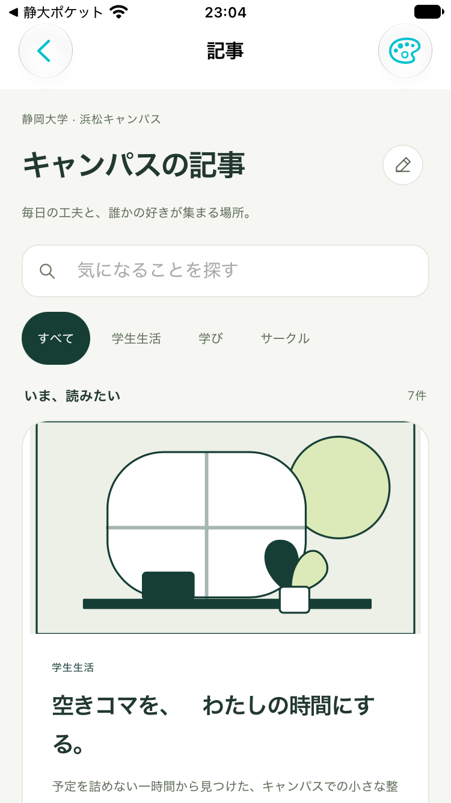

いま、読みたい
7件もう少し、よりみち。
NEW STORIESすべて架空の記事・人物・団体です。
大学の公式情報や、実講義の配布資料ではありません。
先輩の工夫も、団体の活動も、講義で気づいたことも。
記事のモックを開く ↗上記は制作時の依頼です。その後、v6・A1–A13の実装開始承認をチャットで受領しました。承認根拠とiPhoneアプリ組み込みの状況は仕様正本を参照してください。
v6・A1–A13の実装開始承認を受領済みです。 本人の回答に基づき、既存iPhoneアプリへ組み込みました。ホームと講義詳細から記事へ進み、下書きと添付画像をアプリ内へ保存します。承認記録と現在の状況。このHTML内の承認欄は文案作成用です。
カテゴリや検索で探す → 記事を開く → 本文を読む → 関連記事へ。学生生活・学び・サークルの発信を、既存の4テーマと小さいアイコン操作でまとめます。v6では、記事面にMarkdown記法を入力すると見出し・引用・箇条書きなどへ反映します。入力操作は操作モックで試せます。この仕様書内の画面は編集不可の表示見本です。
本文・著者・団体・日付は架空のサンプル。表紙はローカルで同梱する自作の図案です。実際の投稿公開・著者情報の取得は行いません。
承認済みv6のiPhone組み込みで、Simulator上の実アプリを撮影した記事一覧です。以下の仕様見本とは区別します。Core 23テスト・入力と保存のNodeテスト・Simulator向けビルド・独立レビューを通過しました。実機IMEや写真ピッカー等の未確認事項は仕様正本に記録しています。

カテゴリと検索から、気になる記事を見つける。
読みやすい記事を読む。自分の言葉でも書いてみる。
2026.10.16 · 3分で読める
予定を詰めない一時間から見つけた、キャンパスでの小さな整え方。
講義と講義のあいだ、空いた時間をうまく使わなくちゃ。そう思って、やることを詰め込んでいた時期がありました。でも、予定を全部こなしても、午後には少し疲れてしまう。そこで最近は、一時間の最初の十分だけ、何もしないことにしています。窓の外を眺めたり、水を飲んだり。それだけで、頭の中に小さな余白が戻ってくる気がします。
落ち着いたら、ノートの端に「今、どうしたい？」と書きます。眠い日は休む。話したい日は友人を誘う。元気な日は、気になっていた本を数ページ読む。毎回同じ過ごし方でなくていい、と決めると、空きコマが楽しみになりました。
もちろん、課題を進める日もあります。けれど、進んだ量だけで一時間を評価しないようにしています。少し元気になって次の講義へ向かえたら、それも十分。自分のペースを探す時間を、今週はひとつ残してみませんか。これは架空の学生の、ある一日の記録です。
— お読みいただき、ありがとうございます。
このページ内だけの反映です。再読み込みで消えます。
架空の記事・人物・団体によるオリジナルの見本です。
大学の公式情報や実講義の資料ではありません。
読むように、そのまま書く。
未公開の下書き · 1分で読める
JPEG・PNG・WebP / 1枚20MB・2,400万画素まで。長辺2,048px / WebP品質0.82・PNGfallback・小原本優先。表紙1枚・本文8枚、合計40MBまで。画像実体も下書きと一緒にこのブラウザーへ保存します。
attachment: の参照はこの下書き内だけで有効です。コピーは画像ファイルの書き出しではありません。
Markdownを、そのままコピー＆ペースト。
Markdown全文。記号と改行もそのままコピーできます。
表示用の見本です。実際の圧縮結果ではありません。
JPEG・PNG・WebP / 1枚20MB・2,400万画素まで。長辺2,048px / WebP品質0.82・PNGfallback・小原本優先。表紙1枚・本文8枚、合計40MBまで。画像実体も下書きと一緒にこのブラウザーへ保存します。
attachment: の参照はこの下書き内だけで有効です。コピーは画像ファイルの書き出しではありません。
記法を入力すると、その場で書式に変わる。
入力反応後の整形を示す静的な見本です。この見本自体を入力テストの成功とは扱いません。実操作は操作モックで確認できます。
未公開の下書き · 1分で読める
半角スペースや閉じ記号で整う、直接入力の表示見本です。
ここは引用の見本です。
JPEG・PNG・WebP / 1枚20MB・2,400万画素まで。長辺2,048px / WebP品質0.82・PNGfallback・小原本優先。表紙1枚・本文8枚、合計40MBまで。画像実体も下書きと一緒にこのブラウザーへ保存します。
attachment: の参照はこの下書き内だけで有効です。コピーは画像ファイルの書き出しではありません。
プレビューのまま、続きを書ける。
余白があるから、次の発見が入ってくる。
以前のプレビューの余白と文字組みを、そのまま。
未公開の下書き · 1分で読める
いつもの景色も、少し立ち止まると違って見える。小さな発見を、言葉に残してみました。
余白があるから、次の発見が入ってくる。
表示用の見本です。実際の圧縮結果ではありません。
JPEG・PNG・WebP / 1枚20MB・2,400万画素まで。長辺2,048px / WebP品質0.82・PNGfallback・小原本優先。表紙1枚・本文8枚、合計40MBまで。画像実体も下書きと一緒にこのブラウザーへ保存します。
attachment: の参照はこの下書き内だけで有効です。コピーは画像ファイルの書き出しではありません。
表紙にも本文にも、画像を添える。
未公開の下書き · 1分で読める
いつもの景色も、少し立ち止まると違って見える。小さな発見を、言葉に残してみました。
余白があるから、次の発見が入ってくる。
表示用の見本です。実際の圧縮結果ではありません。
JPEG・PNG・WebP / 1枚20MB・2,400万画素まで。長辺2,048px / WebP品質0.82・PNGfallback・小原本優先。表紙1枚・本文8枚、合計40MBまで。画像実体も下書きと一緒にこのブラウザーへ保存します。
attachment: の参照はこの下書き内だけで有効です。コピーは画像ファイルの書き出しではありません。
書きかけを保存して、また続きから。
保存表示の見本です。VMスタブで生成し、実ブラウザーの保存実績ではありません。
未公開の下書き · 1分で読める
いつもの景色も、少し立ち止まると違って見える。小さな発見を、言葉に残してみました。
余白があるから、次の発見が入ってくる。
表示用の見本です。実際の圧縮結果ではありません。
JPEG・PNG・WebP / 1枚20MB・2,400万画素まで。長辺2,048px / WebP品質0.82・PNGfallback・小原本優先。表紙1枚・本文8枚、合計40MBまで。画像実体も下書きと一緒にこのブラウザーへ保存します。
attachment: の参照はこの下書き内だけで有効です。コピーは画像ファイルの書き出しではありません。
参考にしたページを、文章の間に置く。
未公開の下書き · 1分で読める
いつもの景色も、少し立ち止まると違って見える。小さな発見を、言葉に残してみました。
余白があるから、次の発見が入ってくる。
表示用の見本です。実際の圧縮結果ではありません。
JPEG・PNG・WebP / 1枚20MB・2,400万画素まで。長辺2,048px / WebP品質0.82・PNGfallback・小原本優先。表紙1枚・本文8枚、合計40MBまで。画像実体も下書きと一緒にこのブラウザーへ保存します。
attachment: の参照はこの下書き内だけで有効です。コピーは画像ファイルの書き出しではありません。
気に入った記事に反応し、関連する記事へ進む。
2026.10.14 · 3分で読める
架空の「よりみち散歩部」が大切にする、ゆるやかな集まり方。
写真が好きな人、植物を眺めたい人、ただ外の空気を吸いたい人。架空の「よりみち散歩部」は、そんな三人の思いつきから生まれた団体です。速く歩くことも、遠くまで行くことも目標にしていません。いつもなら通り過ぎる道を、少しゆっくり眺める。それが、私たちの活動の中心です。実在のサークルの紹介や募集案内ではありません。
最初は、沈黙が続くと何か話さなきゃと焦りました。でも、同じ景色を見ているだけでも、一緒に過ごした時間は残ります。途中で気になるものを見つけたら立ち止まり、誰かの「これ、いいね」に耳を傾ける。会話の速さも、歩く速さも、少しずつ合っていきました。
帰る前に、今日見つけたものを一つだけ話します。雲の形、壁の影、知らなかった花の色。立派な成果がなくても、一つ見つかるとうれしい。次に会うときも、そんな小さな発見を持ち寄れたらと思っています。活動の形を考えるために作った、架空の団体の記録です。
— お読みいただき、ありがとうございます。
このページ内だけの反映です。再読み込みで消えます。
架空の記事・人物・団体によるオリジナルの見本です。
大学の公式情報や実講義の資料ではありません。
ホーム・時間割・掲示板から記事へ移動し、テーマを引き継ぐ。
該当しないときも、迷わず探し直せる。
記事を探して読む・執筆する・プレビューするモック。実際の公開・コメントは含めない。
一覧の本文と反応数は表示例です。下書きと画像はこの端末・ブラウザーに保存します。ログインやサーバー保存・クラウド同期・外部共有は実装しません。
記事面へ直接入力します。Markdown全文画面では、記法をそのまま編集できます。
| 記法 | 反映するタイミング | 結果 |
|---|---|---|
# 〜###### | 行頭の記号の後に半角スペース | 見出し |
> | 行頭で半角スペースまで入力 | 引用 |
- / * / + | 行頭で半角スペースまで入力 | 箇条書き |
1. | 行頭の数字とピリオドの後に半角スペース | 番号付きリスト |
**太字** / *斜体* | 閉じ記号まで入力 | 強調表示 |
`コード` | 閉じバッククォートまで入力 | インラインコード |
[表示名](https://example.com) | 有効なHTTP/HTTPSのURLと閉じ括弧まで入力 | リンク |
| 行頭のバッククォート3個 | Enterで開始／閉じフェンス＋Enterで終了 | コード欄 |
| 複数行のMarkdownを貼付け | 貼付け後（IME変換中は確定後） | 見出し・引用・リストなどへ反映 |
- だけは普通の文字です。- の後に半角スペースを入れると箇条書きになります。未完成の記法、明示的にエスケープした記号、コード内の記号は書式へ変換しません。
見出し末尾のEnterは次の段落へ。リストのEnterは次の項目へ、空の項目でEnterすると通常の段落に戻ります。日本語変換中は表示を作り直さず、確定後に反映します。
画面内での入力・貼付け・Enter・日本語確定を検証対象にします。下書き保存・コピーでもMarkdown原文を保ちます。
モック制作を止める判断はありません。本実装前に著者/団体の本人性、公開・運営、クラウド同期の仕組みを定めます。